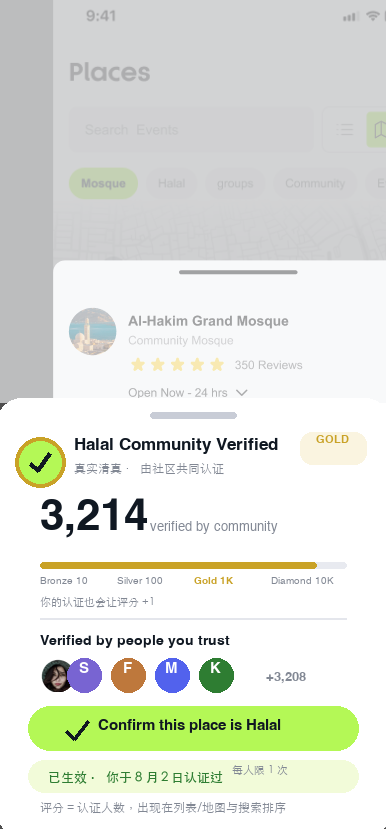

Places 增强 · 社区清真认证评分Community Halal Verified
用户新指令 · 原图打底 / 局部修改层 · 认证体系为新增设计
核心机制：任何用户都可以发布 Place；其他用户到店后可点击 Verified 认证「这家店是真实清真」；每多一人认证，Place 上的数字 +1——这个数字就是该地点的清真可信评分，直接用于列表 / 地图 / 搜索排序。
① 发布
任意用户经 Add Your Place 表单发布地点
审核通过即上线地图
进入「待认证」状态
② 认证
其他用户在详情页点击
「Confirm this place is Halal」
一人一票，实时 +1
③ 计分
认证人数 = 评分
数字直接显示在
地点卡 / 地图 pin / 详情页
④ 权益
评分决定档位徽章
与搜索 / 排序权重
高分地点获得曝光倾斜
屏幕级流转3 屏
S1 为 P51「Add Your Place」真实表单页打底；S2 / S3 为你提供的 Places 详情真实截图，S3 仅叠加认证 Bottom Sheet（原像素未动）。

① 发布 Place
真实表单打底 · 发布后即进入待认证
真实表单打底 · 发布后即进入待认证
→
上线后
其他用户可访
其他用户可访

② 详情页 · 当前
350 Reviews 但无清真可信度信号
350 Reviews 但无清真可信度信号
→
点开
Halal Verified
Halal Verified

② 详情页 · 增强后
认证面板：数字评分 + 一键确认
认证面板：数字评分 + 一键确认
认证与计分规则防刷 + 档位 + 权益
| 模块 | 规则 |
|---|---|
| 计分 | 评分 = Verified 认证人数。点击「Confirm this place is Halal」即时 +1；取消认证 −1；数字同步刷新在详情页大数字、列表卡徽章、地图 pin 角标 |
| 档位徽章 | Bronze 10 → Silver 100 → Gold 1K → Diamond 10K。徽章随档位升级（金环 / 银环 / 铜环），详情页与卡片同步展示 |
| 一人一票 | 每个账号对同一 Place 仅可认证 1 次；重复点击回到面板显示「已生效 · 你于 X 月 X 日认证过」；更换认证需先取消再重评 |
| 防刷 | ① 到店校验：优先给在 Places 打卡 / 距离 500m 内的用户弹认证入口（弱信号也可认证但权重降为 0.5）；② 商家主体账号不可认证自己的 Place；③ 同设备 / 同支付账号聚类，异常峰值进人工复核；④ 新 Place 前 10 票逐票延迟生效防突击 |
| 信任展示 | 面板显示「Verified by people you trust」——共同好友 / 同群组成员认证排最前；总数 +3,208 可下钻完整认证者列表（头像可点进主页） |
| 排序权益 | 同类别按评分排序；搜索「halal restaurant」默认 Verified 优先；评分 ≥ Gold 的地点在 Discover 推荐流获得加权曝光 |
| 埋点 | place_published / verify_sheet_open / verify_confirm_tap / verify_cancel_tap / verifier_list_open / score_tier_up |
原稿对照602 页检索确认
- 发布流程原稿已有——P48 / P51「Add Your Place to the Map!」表单完整（Place Name / Category / Address / Country / City），S1 直接以 P51 打底，仅叠加「发布 → 待认证」提示卡，未改原表单
- 认证评分体系缺失——全稿清真信号仅停留在筛选 Tag（Mosque / Halal）与评论问答，无任何社区认证 / 计数机制 → 本方案新增设计（S3 Bottom Sheet）
- 详情页底图为你提供的真实 Figma 截图（Al-Hakim Grand Mosque · 350 Reviews），S3 仅在上半屏加轻遮罩 + 下半屏叠加认证面板，原像素未动
联动既有方案：游客点认证 / 发布 → 走 GUEST-FLOW 注册墙；认证人数与 Feed 互动身份透出同一头像体系（可点进主页）；Place 高评分可与「位置展示与隐私」的 Discover 同城推荐联动。